官方英文文档：Wireshark_Intro_v6.01.pdf
以下内容为笔者翻译：
Wireshark 实验: DNS v6.01
《计算机网络：自顶向下方法（第6版）》补充材料，J.F. Kurose and K.W. Ross
“不闻不若闻之，闻之不若见之，见之不若知之，知之不若行之。” ——中国谚语
© 2005-2012, J.F Kurose and K.W. Ross, All Rights Reserved
如书中第2.5节所述，域名系统(DNS)将主机名转换为IP地址，在互联网基础架构中发挥关键作用。在本实验中，我们将仔细查看DNS在客户端的细节。回想一下，客户端在DNS中的角色相对简单——客户端向其本地DNS服务器发送请求，并接收一个响应。如书中的图2.21和2.22所示，由于DNS分层服务器之间相互通信，可以递归地或迭代地解析客户端的DNS查询请求，而大多数操作是不可见的。然而，从DNS客户端的角度来看，协议非常简 ——将查询指向为本地DNS服务器，并从该服务器接收到响应。
在开始本实验之前，您可能需要阅读书中的第2.5节来了解DNS。另外，您可能需要查看关于本地DNS服务器，DNS缓存，DNS记录和消息，以及DNS记录中的TYPE字段的资料。
1. nslookup
在本实验中，我们将大量使用nslookup工具，这个工具在现在的大多数Linux/Unix和Microsoft平台中都有。要在Linux/Unix中运行nslookup，您只需在命令行中键入nslookup命令即可。要在Windows中运行，请打开命令提示符并在命令行上运行nslookup。
在这是最基本的操作，nslookup工具允许主机查询任何指定的DNS服务器的DNS记录。DNS服务器可以是根DNS服务器，顶级域DNS服务器，权威DNS服务器或中间DNS服务器（有关这些术语的定义，请参阅书本）。要完成此任务，nslookup将DNS查询发送到指定的DNS服务器，然后接收DNS回复，并显示结果。
上面的屏幕截图显示了三个不同nslookup命令的结果（显示在Windows命令提示符中）。在此示例中，客户端主机位于布鲁克林理工大学校园，默认本地DNS服务器为dns-prime.poly.edu。运行nslookup时，如果没有指定DNS服务器，则nslookup会将查询发送到默认的DNS服务器（在这种情况下为dnsprime.poly.edu）。来看第一个命令：
nslookup www.mit.edu
说这个命令是说，请告诉我主机 www.mit.edu 的IP地址。如屏幕截图所示，此命令的响应提供两条信息：（1）提供响应的DNS服务器的名称和IP地址；（2）响应本身，即 www.mit.edu 的主机名和IP地址。虽然响应来自理工大学的本地DNS服务器，但本地DNS服务器很可能会迭代地联系其他几个DNS服务器来获得结果，如书中第2.4节所述。
现在来看第二个命令：
nslookup -type=NS mit.edu
在这个例子中，我们添加了选项"-type=NS"和域名"mit.edu"。这将使得nslookup将NS记录发送到默认的本地DNS服务器。换句话说，“请给我发送mit.edu的权威DNS的主机名” （当不使用-type选项时，nslookup使用默认值，即查询A类记录。）上述屏幕截图中，首先显示了提供响应的DNS服务器（这是默认本地DNS服务器）以及三个MIT域名服务器。这些服务器中的每一个确实都是麻省理工学院校园主机的权威DNS服务器。然而，nslookup也表明该响应是非权威的，这意味着这个响应来自某个服务器的缓存，而不是来自权威MIT DNS服务器。最后，响应结果还显示了麻省理工学院权威DNS服务器的IP地址。 （即使nslookup生成的NS类型查询没有明确要求IP地址，本地DNS服务器依然”免费“返回了这些信息，然后被nslookup显示出来。）
最后来看第三个命令：
nslookup www.aiit.or.kr bitsy.mit.edu
在这个例子中，我们希望将查询请求发送到DNS服务器 bitsy.mit.edu ，而不是默认的DNS服务器（dns-prime.poly.edu）。因此，查询和响应事务直接发生在我们的主机和 bitsy.mit.edu 之间。在这个例子中，DNS服务器 bitsy.mit.edu 提供主机 www.aiit.or.kr 的IP地址，它是高级信息技术研究所（韩国）的Web服务器。
现在我们了解了一些示例，您现在可能想知道nslookup命令的一般语法。语法是：
nslookup -option1 -option2 host-to-find dns-server
一般来说，nslookup可以不添加选项，或者添加一两个甚至更多选项。正如我们在上面的示例中看到的，dns-server也是可选的；如果这项没有提供，查询将发送到默认的本地DNS服务器。
现在我们提供了总览了nslookup，现在是你自己驾驭它的时候了。执行以下操作（并记下结果）：
-
运行nslookup以获取一个亚洲的Web服务器的IP地址。该服务器的IP地址是什么？
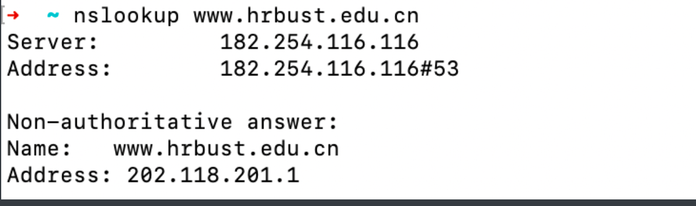
查询了哈尔滨理工大学的ip地址, 通过得到的信息可以知道, 该服务器的IP地址为202.118.201.1
可以发现这是一个来自DNS服务器182.254.116.116的应答, 搜索发现, 这是腾讯的备用域名服务器.
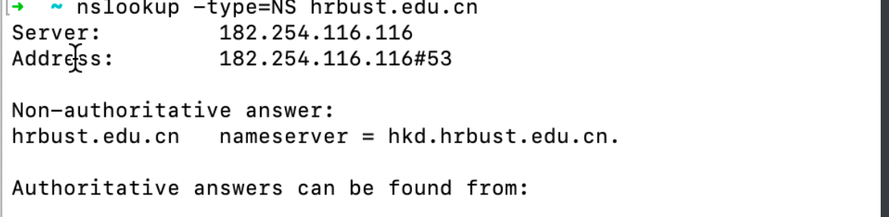
继续查询权威名字服务器, 得到的是非权威的, 这是因为腾讯的DNS服务器不知道哈尔滨理工大学的权威名字服务器, 只能向根DNS→TLD(顶级域DNS)(.cn)→edu.cnDNS→hrbust.edu.cnDNS, 迭代查询获得
如果我们之间对这个DNS服务器发起DNS查询:
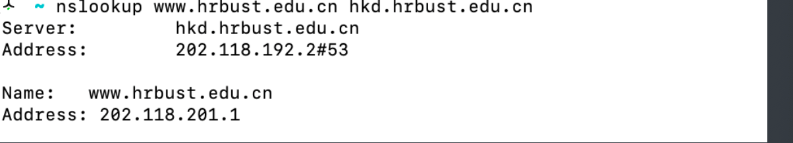
可以发现, 这样一条来自权威名字服务器的应答.
-
运行nslookup来确定一个欧洲的大学的权威DNS服务器。
查询了苏黎世联邦理工大学的权威DNS
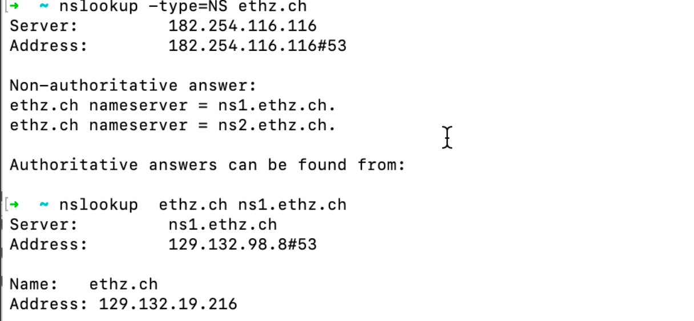
可以发现权威名字服务器为: ns1.ethz.ch
- 运行nslookup，使用问题2中一个已获得的DNS服务器，来查询Yahoo!邮箱的邮件服务器。它的IP地址是什么？
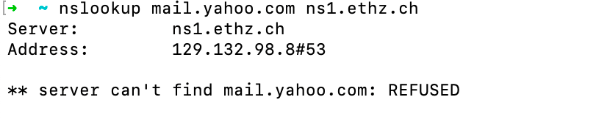
查不到好吧…人家是大学的权威DNS, 没有雅虎的邮件服务器地址, 只维护了大学的IP地址查询, 不当然公共DNS的指责, 即不去迭代的查询(个人猜测)
又到了问聪明的chatGPT的时间了:
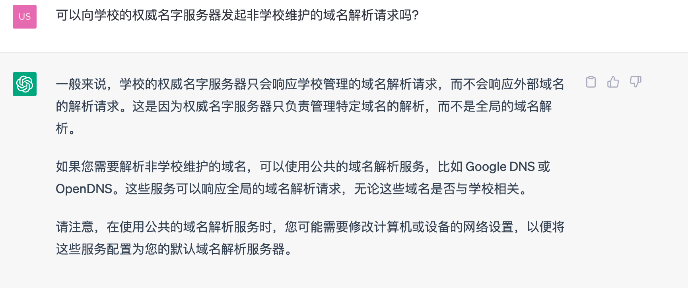
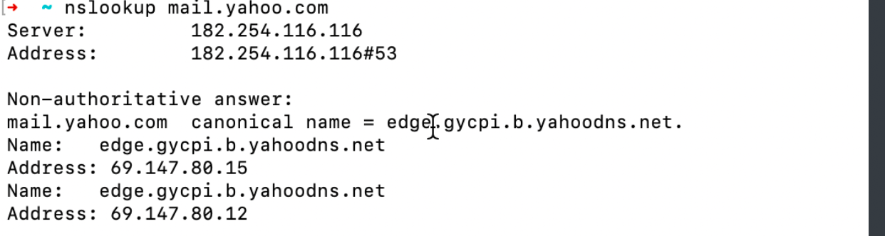
使用腾讯的公共DNS服务器我们可以得到Yahoo的邮件服务器地址.
同时为发现查询www.mail.yahoo.com和mail.yahoo.com的结果不同
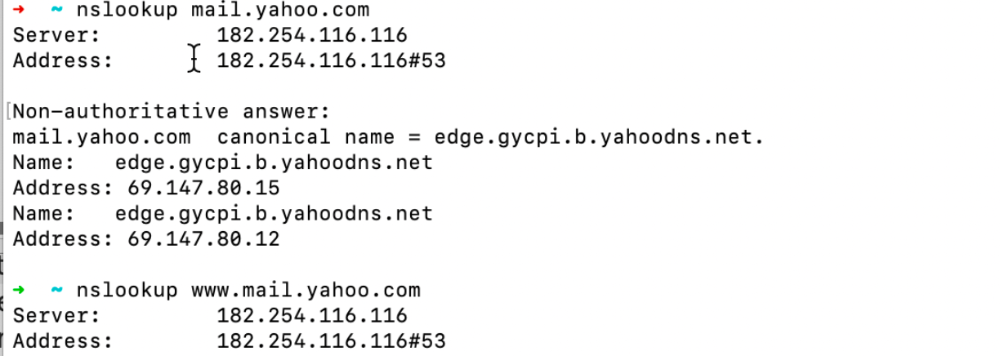
查询chatGPT得到以下回复:
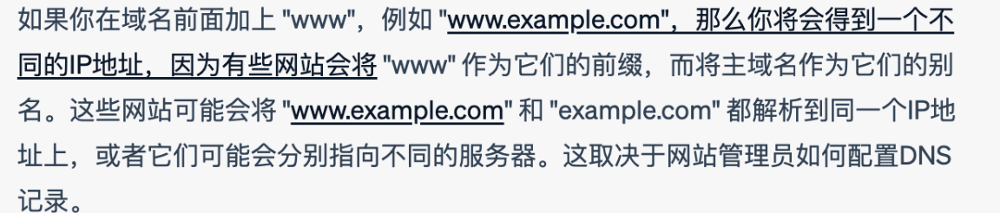
2. ipconfig
ipconfig（对于Windows）和ifconfig（对于Linux / Unix）是主机中最实用的程序，尤其是用于调试网络问题时。这里我们只讨论ipconfig，尽管Linux / Unix的ifconfig与其非常相似。 ipconfig可用于显示您当前的TCP/IP信息，包括您的地址，DNS服务器地址，适配器类型等。例如，您只需进入命令提示符，输入
ipconfig /all
ipconfig对于管理主机中存储的DNS信息也非常有用。在第2.5节中，我们了解到主机可以缓存最近获得的DNS记录。要查看这些缓存记录，在 C:\> 提示符后输入以下命令：
ipconfig /displaydns
每个条目显示剩余的生存时间（TTL）（秒）。要清除缓存，请输入
ipconfig /flushdns
清除了所有条目并从hosts文件重新加载条目。
3. 使用Wireshark追踪DNS
现在，我们熟悉nslookup和ipconfig，我们准备好了一些正经的事情。首先让我们捕获一些由常规上网活动生成的DNS数据包。
- 使用ipconfig清空主机中的DNS缓存。
- 打开浏览器并清空浏览器缓存。 （若使用Internet Explorer，转到工具菜单并选择Internet选项；然后在常规选项卡中选择删除文件。）
- 打开Wireshark，然后在过滤器中输入“ip.addr==your_IP_address”，您可以先使用ipconfig获取你的IP地址。此过滤器将删除既从你主机不发出也不发往你主机的所有数据包。
- 在Wireshark中启动数据包捕获。
- 使用浏览器访问网页： http://www.ietf.org
- 停止数据包捕获。
如果您无法在你的网络连接上运行Wireshark，则可以下载一个捕获了数据包的文件，这个文件是本书作者在自己计算机上 按照上述步骤捕获的（原文注：Download the zip file http://gaia.cs.umass.edu/wireshark-labs/wireshark-traces.zip and extract the file dnsethereal-trace-1. The traces in this zip file were collected by Wireshark running on one of the author’s computers, while performing the steps indicated in the Wireshark lab. Once you have downloaded the trace, you can load it into Wireshark and view the trace using the File pull down menu, choosing Open, and then selecting the dns-ethereal-trace-1 trace file. ）。回答下列问题。您应该在解答中尽可能展示你使用了哪些你捕获到的数据包，并注释出来（原文注：What do we mean by “annotate”? If you hand in a paper copy, please highlight where in the printout you’ve found the answer and add some text (preferably with a colored pen) noting what you found in what you ‘ve highlight. If you hand in an electronic copy, it would be great if you could also highlight and annotate. ）。若要打印数据包，请使用文件->打印，只勾选仅选中分组，和概要行，并选中你所需要用于解答问题的数据包。
-
找到DNS查询和响应消息。它们是否通过UDP或TCP发送？
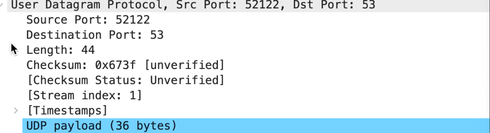
通过UDP发送
-
DNS查询消息的目标端口是什么？ DNS响应消息的源端口是什么？
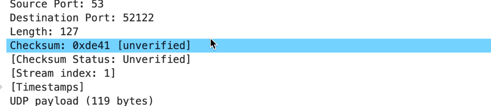
目标端口通过上一问的图片可以得到为: 53, 响应DNS到源端口也是53
-
DNS查询消息发送到哪个IP地址？使用ipconfig来确定本地DNS服务器的IP地址。这两个IP地址是否相同？
本地IP 地址: 10.51.172.226
DNS服务器IP地址: 182.254.116.116
相同
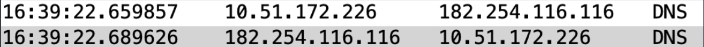
-
检查DNS查询消息。DNS查询是什么"Type"的？查询消息是否包含任何"answers"？
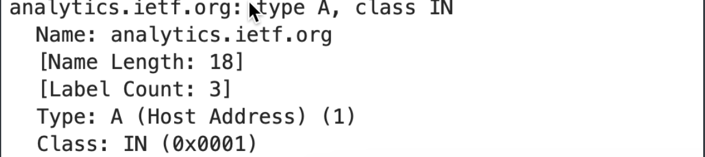
TYPE: A
不包含
-
检查DNS响应消息。提供了多少个"answers"？这些答案具体包含什么？
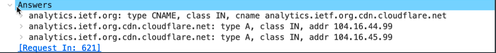
三个answer
第一个answer: TYPE CNAME, 主机别名到规范主机名的对应关系
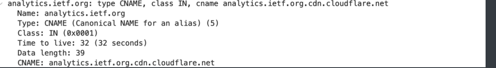
包含NAME(域名),TYPE, Class, TTL, Data. CNAME(规范主机名)
第二个answer: TYPE A, 域名和IP地址
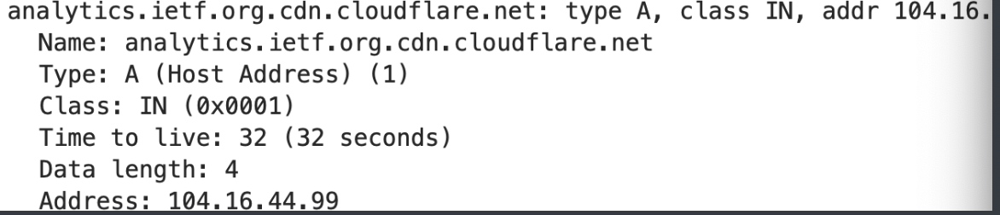
得到了规范主机名的IP地址
第三个answer:

另一个规范主机名的IP地址
-
考虑从您主机发送的后续TCP SYN数据包。 SYN数据包的目的IP地址是否与DNS响应消息中提供的任何IP地址相对应？
直接过滤ip.addr==104.16.44.99
结果如下:
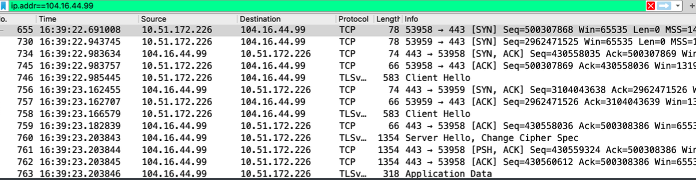
可以发现我的主机向这个IP地址发起了TCP的链接请求
-
这个网页包含一些图片。在获取每个图片前，您的主机是否都发出了新的DNS查询？
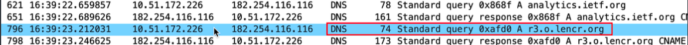
有一个对r3.o.lencr.org的DNS查询, 搜索发现这是一个恶意的软件发起的, 目的是给浏览器带来广告(服了…)
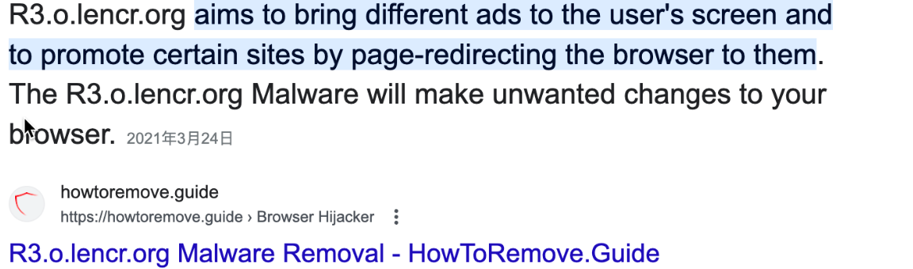
现在让我们玩玩nslookup（原文注：If you are unable to run Wireshark and capture a trace file, use the trace file dns-ethereal-trace-2 in the zip file http://gaia.cs.umass.edu/wireshark-labs/wireshark-traces.zip ）。
- 启动数据包捕获。
- 使用nslookup查询 www.mit.edu
- 停止数据包捕获。
我们从上面的屏幕截图看到，nslookup实际上发送了三个DNS查询，并收到了三个DNS响应。只考虑本次实验相关结果，在回答以下问题时，请忽略前两组查询/响应，因为nslookup的一些特殊性，这些查询通常不是由标准网络应用程序生成的。您应该专注于最后一个查询和响应消息。
-
DNS查询消息的目标端口是什么？ DNS响应消息的源端口是什么？
查询:

响应:
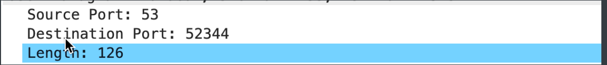
-
DNS查询消息的目标IP地址是什么？这是你的默认本地DNS服务器的IP地址吗？
是的
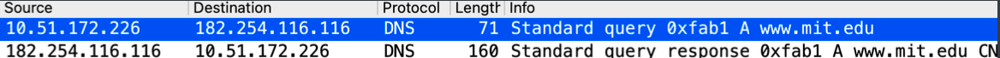
-
检查DNS查询消息。DNS查询是什么"Type"的？查询消息是否包含任何"answers"？
-
TYPE A, 不包含
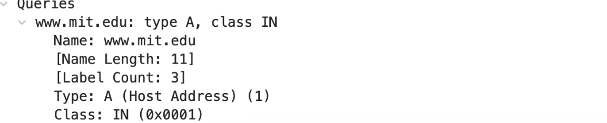
-
检查DNS响应消息。提供了多少个"answers"？这些答案包含什么？
三个
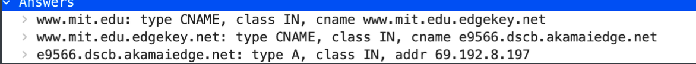
包含主机别名到规范主机名的转化关系(TYPE:CNAME)
规范主机名到IP地址到转换关系
现在重复上一个实验，但换成以下命令：
nslookup -type=NS mit.edu
回答下列问题：
-
DNS查询消息发送到的IP地址是什么？这是您的默认本地DNS服务器的IP地址吗？
是的
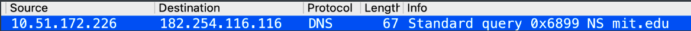
-
检查DNS查询消息。DNS查询是什么"Type"的？查询消息是否包含任何"answers"？
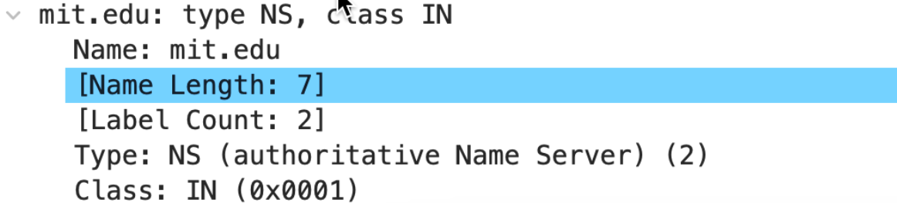
Type: NS
不包含
-
检查DNS响应消息。响应消息提供的MIT域名服务器是什么？此响应消息还提供了MIT域名服务器的IP地址吗？

现在重复上一个实验，但换成以下命令：
nslookup www.aiit.or.kr bitsy.mit.edu
该DNS服务器已停用, 使用作者提供的抓包结果dns-ethereal-trace-4
回答下列问题：
-
DNS查询消息发送到的IP地址是什么？这是您的默认本地DNS服务器的IP地址吗？如果不是，这个IP地址是什么？
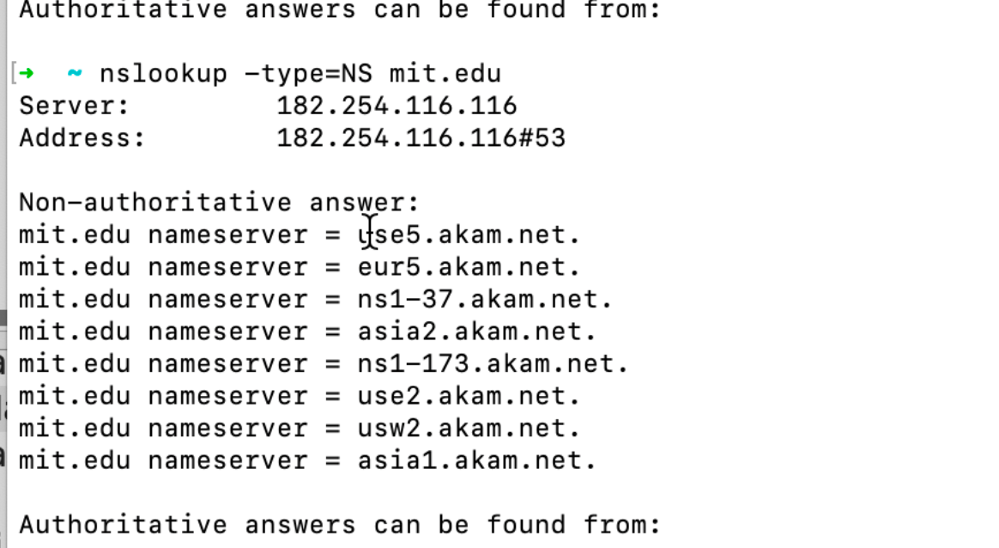
理论上不是, 因为已经指定了对应的DNS服务器,目标IP地址应该是DNS服务器名字
bitsy.mit.edu的IP地址 -
检查DNS查询消息。DNS查询是什么"Type"的？查询消息是否包含任何"answers"？
第一个查询:
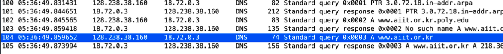
TYPE: PTR 通过IP反向查询域名
第二个查询: TYPE A, 查询
www.aiit.or.kr.poly.edu的IP地址, 目标IP地址是18.72.0.3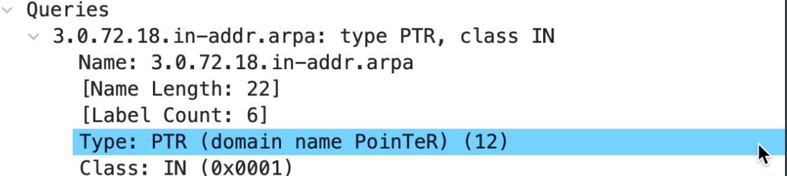
第三个查询: TYPE A, 查询
www.aiit.or.kr的IP地址, 目标IP和上一个查询相同.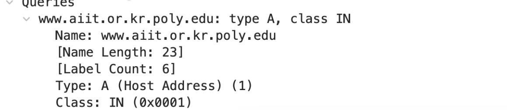
-
检查DNS响应消息。提供了多少个"answers"？这些答案包含什么？
第一个响应: 提供了一个answer
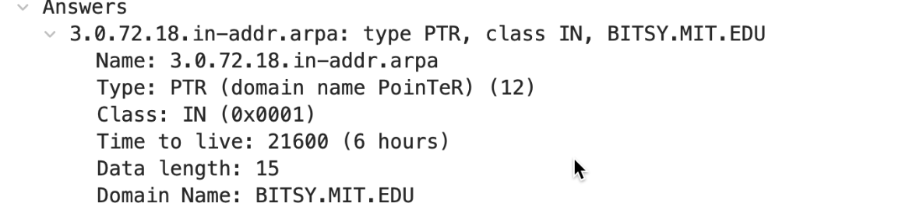
TYPE:PTR
回答里包含IP地址3.0.72.18对应的域名
第二个响应:
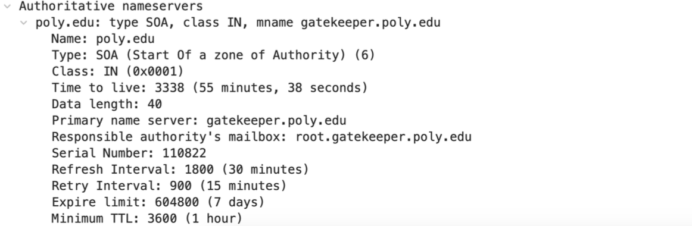
TYPE: SOA(Start Of a zone of Authority)
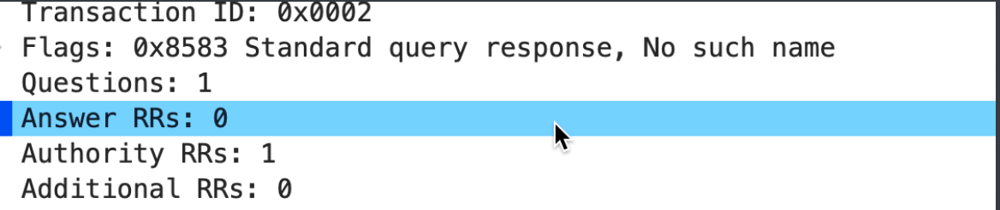
响应结果为找不到:
第三个响应:
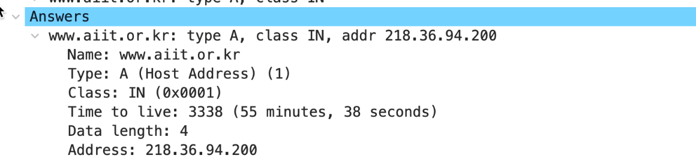
ansewer为目标域名的IP地址.